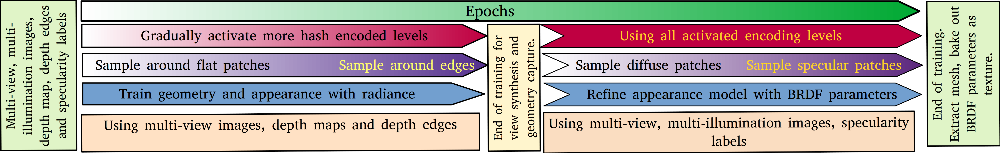
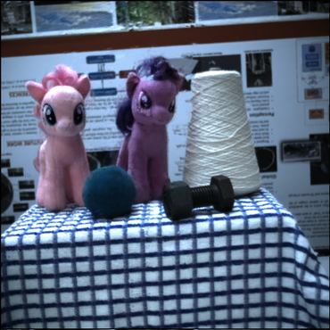
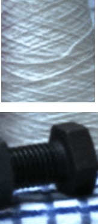
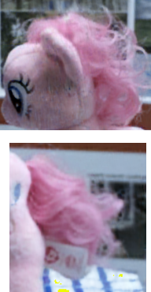
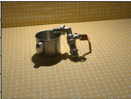

For our prototype, we use a pair of machine vision cameras ( FLIR Grashopper ) with a 1'', 4MP CMOS imaging sensor of resolution of 2048 \(\times\) 2048 pixels. As we focus mainly on small scenes, we use two sets of lenses that yield a narrow field of view -- 12mm and 16mm fixed focal length lens (Edmund Optics). We use 80W 5600K white LEDs (CREE LED) as flashes driven by a DC power supply and switched though MOSFETs controlled with a Arduino over USB. At each pose of our rig, we captured 12 images with each of the flash lights on (one light at a time) and one HDR image per camera. The cameras are configured to return a 12 bit Bayer image which is then de-Bayered to yield a 16 bit RGB image. We set the left and right cameras to be triggered simultaneously by an external synchronization signal. We configured the camera frame acquiring and the flash triggering programs to run on the same thread and synchronized the frame acquisition with the flashes through blocking function calls.
RGB and depth (Left) |
RGB and depth (Right) |
Normals and edges (Left) |
Normals and edges (Right) |
|
|
|
|
|
Mesh with diffuse texture |
Left and right flash images |
Mesh with truncated BRDF texture |
|
|
Capture sequence (1 of 2) |
Geometry |
Surface Relighting |
Volumetric Relighting |
|
|
Our system captures the scene using a stereoMFC and yields color images (left and right channels), aligned depth maps (left and right), normals and depth edges. We use this to model the scene's radiance and geometry. After the scene's diffuse color has been captured, we use the multi-flash images and a truncated set of the Disney BRDF parameters to model the illumination dependent aspects of the scene.

GT(left) vs Reconstruction(right) |
Crops |
Shells (sampling volumes) |
|

|
 | |
|
|
 |
RGB & depth (Left, geometry 1) |
Normals & edges (Left, geometry 1) |
RGB & depth (Right, geometry 2) |
Normals & edges (Right, geometry 2) |
|
|
|
|
|
Although a voumetric representation is more photorealistic for capturing thin geometries, we present a mesh based representation and the shells extracted by our method. The examples below have been trained with 4 stereo pairs: 7 images to train, 1 to test, total train time ~55 mins, 35K gradient steps, test PSNR: 29+. However, as we bake the appearance as diffuse texture, our psnr drops to about 25 across both cases.
Geometry 1 : Textured mesh |
Geometry 1 : Shell |
Geometry 2 : Textured mesh |
Geometry 2 : Shell |
VolSDF\(^{†}\) |
NeUS\(^{†}\) |
AdaShell\(^{†}\) |
UniSurf\(^{†}\) |
The reconstruction is created with 7 RGBD images from 4 stereo pairs (one RGBD reserved for validation). Time taken to refine geometry and base color: ~40 mins (100K grad steps). Time to recover partial BRDF model (~4 hrs). We recovered specularity, roughness and \(r_0\), the Fresnel reflection component. The web based display tool used here ignores \(r_0\).
Captured RGB and Depth |
Multi-flash (12 x 4 x 2) (Left & Right) |
Mesh with truncated BRDF texture |
|
|
|
The reconstruction is created with 2 stereo pairs -- 3 RGBD images to train, 1 to test. Time taken to refine geometry and base color: ~20 mins (100K grad steps). Time to recover partial BRDF model (~4 hrs). We recovered specularity, roughness and \(r_0\), the Fresnel reflection component. The movie is rendered approximately from the view of a camera placed between the stereo cameras. We use Blenders keyframing tool to manually choose 20 locations of the light 10 on the plane of the camera and 10 around the object and render 200 relit images using Blender. Blender does not support our exact reflectace model so like before, we drop \(r_0\), the Fresnel reflection component. We use Blender's Cycles renderer with an SPP of 2048 @ 1536x1536 pixels and rescale it to 370 x 370 pixels below.
Multi-flash pair (12 x 2) (L & R) |
Normals and edges (or specularities) (L & R) |
200 new light positions @ 1FPS |
|
|
|
|
|
|
|
At its core, our method integrates a set of posed RGBD images to train a neural 3D model. As implemented, we assume the scene to be static and the rig moving. However, our pipeline can accommodate a turn-table. Note that commercial turn-table scanners integrate the data using a combination of the encoders on the turn-table and point cloud registration. The sytem's camera-projector pair is tuned to yield dense scene points at close distances. Our stereo backend has a limit on the disparity range and will break at those resolutions. The lowest camera-object distance we can accommodate is 400 mm with a 16 mm lens (see "Reconstructing a very shiny object" demo above), where we struggle due to the learnt stereo over-smoothing the disparities. To incorporate a turn-table to our pipeline, we remove visual features from the background and force our hybrid RGBD pose estimation system (sec 4.1) to focus on the foreground using depth based masking. The depth masks are not perfect, as a result, the pose estimates for data collected with a turn-table are worse than the case when the robot is moving. In the example below we take 6 RGBD images -- 3 stereo pairs in case for the moving camera, 6 RGBD captures (left channel of stereo) with the rotating turn-table. Train on 5 and test on 1 image, we use AdaShell\(^++\) for this demo. The quality of reconstruction suffers a bit for the case with turn-table, but more importantly, the current pose estimation pipeline breaks before the turn-table can rotate the object significantly. At the moment, this is an engineering problem which we believe is solvable by designing our own robot mounted camera-projector system, which is outside the scope of this work.
Camera on robot (3 stereo pairs) |
Ground Truth vs reconstruction |
Object on turntable (6 poses) |
Ground Truth vs reconstruction |
|
|
|
|
|
Turntable sequence |
Multi-flash images |
Specular Tint |
Relighting |
|
|
|
In absence of depth, radiance based methods need viewpoint diversity to disambiguate between appearance and geometry. Additionally, monocular supervision is very dependent on the scene-network combination. We incorporate metric depth from stereo to capture appearance and geometry. Below we show our result on training on the ReNE reflective data sequence. ReLight My NeRF [Toschi et al. '23'] has a low view point diversity and does not supply metric depth. Our experiment below tries to train a radiance model (architechture v5 from Toschi et al.). With the given description and hyperparameters, our re-implementation of architechture v5 was unable to achieve the reported reconstruction quality. Additionally, monocular methods (as recommended by MonoSDF [Yu et al '22]) did not generate meaningful supervisions on this sequence. As a result, although we made some progress in view interpolation, the geometry recoverd in the process is meaningless.
ReLightMyNeRF training images |
Reconstructed radiance (PSNR 23.5) |
Reconstructed shape |
|

|
|
Part of the source code and design of this webpage is adapted from Ref-NeRF project page. We would like to thank the authors for the inspiration. |